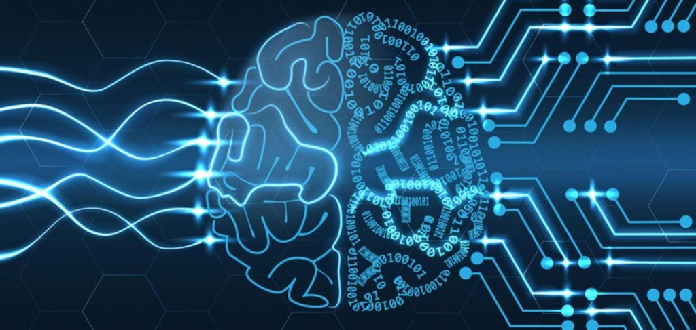

Nombre: jorge
Apellido: arcos
Fecha: 08/07/2025
Curso: Programacion
Documentbienvenidos al mundo de la inteligencia artificial
Introduccion a la Inteligencia Artificial
La inteligencia artificial es un campo de la ciencia relacionado con la creación de computadoras y máquinas que pueden razonar, aprender y actuar de una manera que normalmente requeriría inteligencia humana o que involucra datos cuya escala excede lo que los humanos pueden analizar.
TIPOS DE INTELIGENCIA ARTIFICIAL
ia debil
ia general
ia super inteligencia
La Inteligencia Artificial Estrecha (ANI), también conocida como Inteligencia Artificial Débil, es un tipo de IA diseñada para realizar tareas específicas y limitadas, a diferencia de la IA general que busca igualar o superar la inteligencia humana en diversas tareas. Actualmente, la mayoría de las aplicaciones de IA que vemos en la vida cotidiana, como asistentes virtuales, sistemas de recomendación y reconocimiento facial, son ejemplos de ANI.
La Inteligencia Artificial General (AGI), también conocida como "Inteligencia Artificial Fuerte" o "Inteligencia Artificial de Propósito General", es un concepto hipotético de IA que aspira a igualar o superar la inteligencia humana en una amplia gama de tareas. A diferencia de la IA estrecha (ANI), que se especializa en tareas específicas, la AGI buscaría la versatilidad y la capacidad de aprendizaje de la inteligencia humana, permitiéndole adaptarse y resolver problemas en diversos dominios.

La Superinteligencia Artificial (ASI, por sus siglas en inglés) es un concepto teórico de un sistema de inteligencia artificial que supera la inteligencia humana en todos los aspectos. Esto incluye la resolución de problemas, la creatividad, el razonamiento, la toma de decisiones y la comprensión emocional. A diferencia de la IA actual, que se limita a tareas específicas, la ASI tendría la capacidad de aprender, adaptarse y crear nuevas soluciones de manera autónoma, superando las capacidades humanas en cualquier tarea intelectual.